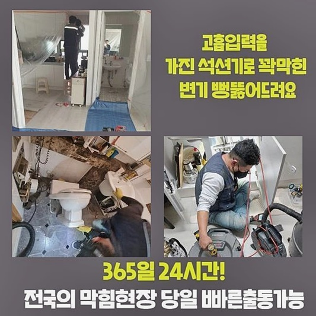
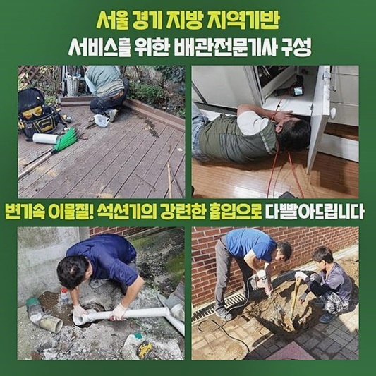
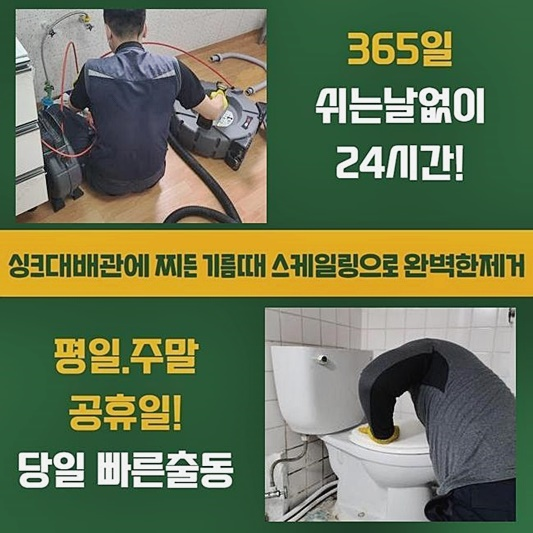
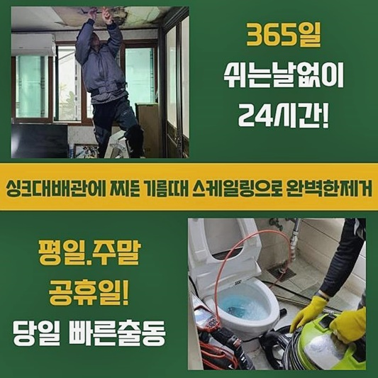
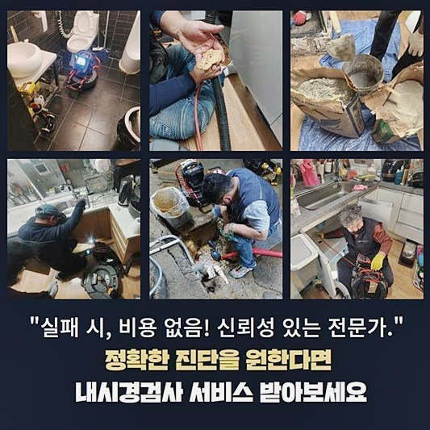
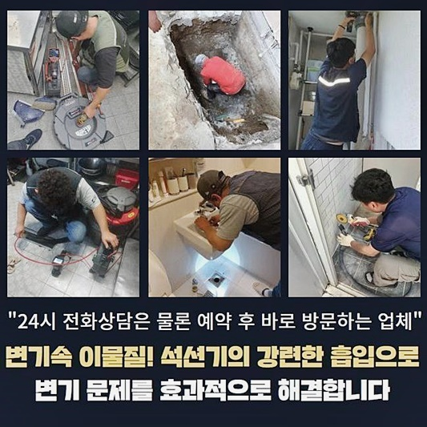

🏠 하남 당정동씽크대뚫음 초일동 배관내시경카메라 부속수리
용인 싱크대막힘 전문 시공 후기

📋 작업 개요
- 위치: 용인
- 서비스 유형: 싱크대막힘, 변기막힘, 하수구막힘, 배관막힘, 역류해결, 뚫는업체, 고압세척, 설비공사
- 작업 일시: 2024. 9. 2. 10:29
- 업체명: 하수구수사대 (010-5615-2118)
🔍 문제 상황
하남 당정동씽크대뚫음 초일동 배관내시경카메라 부속수리
종종 의뢰자님들께서 집안과 밖의 배관이 막혔을때 문의를하시는데요
이번에는 여러가지 종류의 배관문제로 고생했던 의뢰자님의 현장문제를 공유하려 해요
의뢰자분께서 다세대주택 세탁기 인근에 오수가 넘쳐 사용하지 못한다고 연락해주셨어요
옷을 세탁하려 이용하면 구정물이 솟아올라 흘러내린다고 하시더라구요
막힌곳의 문제점을 찾아낸 뒤 불편함을 겪고 계신 사항을 바로 해결하고자 빠르게 피해장소로 도착했습니다
자택에 방문하여 베란다의 배수구들을 진단해보니
의뢰를 해주실때 말씀해 주셨던대로 세탁실에 위치한 관로에 이물로 가득차 역으로 분출되는 일이 발생되고있는 상황이었습니다
진입부에 바깥으로 나온 기름 덩어리도 둥둥 떠서 다니고 있는것을 확인되었어요
하수관을 뚫어내는 기기인 석션기기를 운용하여 막혀있는곳을 흡입하여 제거하였습니다
발코니 위치의 배관에 고여있는 오수도 한번 제거하였습니다
가끔씩 생기는 단조로운 문제들은 어디서든 석션기계 만으로 증세가 없어지기도해요

🔎 원인 분석
💡 전문가 진단: 정밀 진단 장비를 사용하여 슬러지의 고착 여부를 판명하고 타격/세척 작업을 실시했습니다.
여러회차 석션 작업 후 적은양의 하수를 부어 배수검열을 진행하니
조금 흘러 내려가는듯 하더니 금방 원래대로 가득 찼습니다
이번건과 같은 케이스는 복잡하지 않은 막힘이 아니였어요
하수구가 막혀버린 곳을 확인할 수 있는 기기로서 내시경기기를 사용해서 막힘이 생긴곳의 문제점을 보았습니다
내시경기기는 가늘고 긴 케이블 시작점에 카메라렌즈가 헤드부에 달린 기계로 쉽게 생각하면 특수신체검진을 받을때도 사용되는 대장내시경장치와 동일한 효과를 가진 장비에요
확실하게 체크하기 어려운 배수관의 내부 증세를 점검할 수 있어요
내시경기기를 밀어넣어 하수관 내부를 상태를 확인해보니 모니터에 오일슬러지 및 오물로 인해 온갖 오염물의 모습이 보이고있다고합니다
물이 흐르는 곳까지 좁아진 상태로 흐르기 힘들 정도 였지만 막혀버릴 규모는 아니였어요
내시경기기를 깊숙한 곳까지 가용시켜 구불구불거리는 배관의 속까지 체크해보았습니다
주방에있는 싱크대의 배관과 이어지는 곳에서 큰 덩어리가 탐지되었습니다
주방싱크대 배관에서 자주 사용하게 되는 주름관의 부스러기가 배관속에 들어가 있는 모습을 보았어요
배수구 망을 통과 할수있는 만큼은 아니므로 주방인테리어 공사를 하며 작은 자재들은 가져가지 않고 처리한것 같이 느껴졌어요

🔧 작업 과정
남아있는 찌꺼기와 고착물이 서로 부딪히면서 압력이 발생되어 배관 안쪽에 충격을 만들기도 하여 부서질수도 있었어요
거실의 발코니와 주방싱크대가 연결되어 오염물들로 물이 흐르는 곳까지 축소되어서 양측에서 물을 사용하면 역류현상이 생길수밖에 없어요
샤프트장치를 이용하여 거실의 발코니와 하수구 세척작업을 하게되었습니다
샤프트장치는 체인노커와 모터랑 연결형태의 스케일링 기계로서 모터들을 가동 시키게되면 앞쪽에 달려있는 사슬형태가 회전하는 기기입니다
노커라는 이름으로 불리우는 여러종류의 사슬은 돌아가는 힘으로 가득차 있는 부분을 긁어버려서 배수관의 세척이 진행됩니다
사프트장비 운용을 시행해 내시경장비를 함께 가용시켜 이물이 누적된 곳 먼저 목표설정하고 작업을 진행하였어요
한번씩 물들을 흘려보내주며 흡착물을 분해하는것을 보조했습니다
파쇄된 오물과 기름때 잔해들은 석션기계를 써서 빨아들여 제거하였습니다
해결을 하는 중간에 의뢰자분께서는 싱크대 조각이 어쩌다 청수관 내부로 들어가있는 것 인지 이해가 가지 않는다고 말해주셨습니다
과거에 인테리어를 위해 공사할때 작업자분의 실수들로 이런 증세가 발생했을 이유가 있다고 얘기해드리니 놀라셨습니다
우리들은 고객님들께 가끔가다 상상하기 어려운 잔해물이 하수가 막힌부분의 원인이 발생될 수 있다고 비슷한 상황을 안내해드리면서 꾸준히 생길수밖에 없는 현상이라고 안내하였습니다
그리고 우리들은 흡사한 작업들을 자주하면서 이상상황을 늘 해결했다고 강조하여 말씀드렸어요
싱크볼에서 배관의 연결부위의 물이 흐르지않는 원인인 싱크의 배관조각을 꺼내보니 호스조각의 크기또한 예상보다 커서 배관을 막히게 할수있다고 보게되었습니다
이와같은 찌꺼기로 배수관이 막히는 일이 발생되며 세탁기가 있는 곳과 싱크대의 배수관들이 서로 통하여 동시다발적으로 물을 쓸때마다 흐르지않고 흐름을 거스르는 현상이 발생할 수밖에 없었습니다
해결이 되니 고객께서도 마음 편해지셨다 말씀하시더라구요
싱크대의 하수관들을 해결한뒤 안에서 나오게된 잔해물들의 모습이 상상한것보다 많았었어요
저희업체는 이물질은 채망으로 걸러서 하수들은 변기통에 처리하고 건더기로 되어있는 쓰레기는 분리하여 자취없이 치워드렸어요
문제점을 해결한 후에 싱크대의 배수관을 관찰했습니다
거실의 발코니 전체적으로 배수흐름 검사를 확인하니 배수가 답답한 기색없이 배출되는 것까지 보게되었습니다


✅ 작업 완료
해결되기 이전에 생겼던 역으로 물이 분출되었던 일들이 확인되지 아니한지 빈틈없이 체크를 하고 고객님댁 내부를 정리진행을 하고 기계들을 챙겨서 복귀진행했습니다
갑자기 배수관에서 오수가 출수되지 않고 역행되는 등 증세가 생기게 된다면 신속히 전문기술을 가진자에게 의뢰하는게 빠른해결을 할수있는 방법이에요
각기 다른 알맞은 이물질제거와 해결책을 수행하여 결함을 해결할 수 있기 때문입니다
저희의 경우 여러분들 모두가 불편없이 일상생활을 보내기위해 빠르고 확실하게 이상사태를 시정해 드립니다
언제나 전화 해주시면 빠르고 기술적인 답변을 제공해 드릴게요 고맙습니다!



⚠️ 주방 싱크대 배관 막힘 예방 수칙
- ✅ 기름기가 묻은 식기나 프라이팬은 설거지 전 키친타올로 반드시 기름때를 닦아내세요.
- ✅ 주기적으로 싱크대 개수대에 뜨거운 물을 가득 받아 한 번에 내려 배관 내부 기름을 씻어내세요.
- ✅ 배수구 거름망을 미세한 필터로 사용하시고 음식물 찌꺼기가 틈으로 새어 들지 않게 관리하세요.
- ✅ 베이킹소다와 식초를 뜨거운 물과 함께 일주일에 한 번씩 부어주면 배관 살균과 막힘 예방에 좋습니다.
💡 핵심 정리
- 확실한 장비 작업(내시경 점검 및 샤프트 스케일링)으로 원인을 뿌리 뽑습니다.
- 작업 후 1년 이내에 동일한 부위 재발 시 100% 무상 A/S 서비스를 보장합니다.
- 서울 · 경기 · 인천 전 지역에 24시간 언제든 긴급 출동할 수 있도록 항시 대기 중입니다.
❓ 자주 묻는 질문 (FAQ)
🚨 용인 싱크대막힘 문제로 고민이신가요?
정확한 원인 진단과 확실한 시공으로 재발 없는 해결을 약속드립니다.
24시간 긴급 출동 | 서울 · 경기 · 인천 전지역 | 1년 내 재발 시 무상 A/S